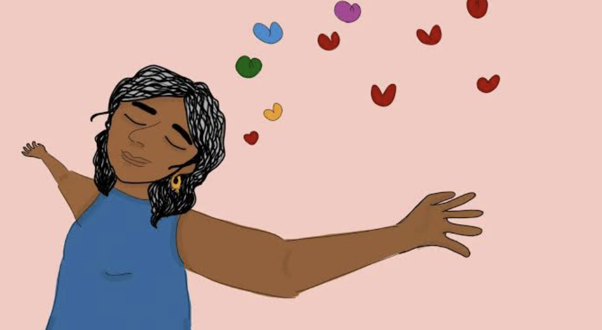

Overview
Nearly half of U.S. adults are currently single, and many are staying single for longer, yet psychological science has only recently begun asking who thrives in that status and why. Existing measures of singlehood-related constructs, such as commitment, were often adapted directly from romantic-relationship research without testing whether they mean the same thing for people in different circumstances. This project addresses that gap, asking both whether our measures hold up across different kinds of single people, and what "commitment to singlehood" is actually capturing.
Approach
In a sample of 1,183 single adults, I tested measurement invariance of a new investment-based commitment scale across gender, age, relationship history, and political orientation. To dig deeper into what the scale was picking up, I then collected qualitative data from 820 single adults describing what being single means to them, and used their responses to distinguish wanting to stay single from feeling like one has to — two experiences that a single commitment score may blend together.
My role
I led both studies: designing the measurement-invariance analysis, developing the coding scheme for the qualitative data with my collaborators, and running the quantitative follow-up analyses linking meaning-based themes to commitment.
Outputs
Manuscripts in preparation.